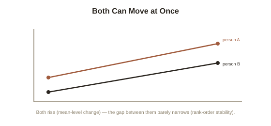

Chapter 2: How Personality Actually Changes Across a Lifetime
Chapter 1 mentioned, briefly, that Big Five traits shift gradually over a lifetime, most commonly toward higher conscientiousness and agreeableness with age. This deserves real detail, because it resolves an apparent contradiction sitting right at the center of trait psychology: if personality is stable enough to be usefully measured and to predict real outcomes, how can it also change? The answer requires separating two genuinely different kinds of stability that get blurred together in casual conversation.
Two different questions hiding inside "does personality change?"
Personality researchers distinguish rank-order stability (how consistently a person's trait score, relative to their peers, stays in the same position over time — whether the most conscientious person in a group at age 20 tends to still be among the most conscientious at age 40) from mean-level change (whether the average level of a trait across a population shifts in a consistent direction over time, regardless of anyone's relative ranking). These can, and do, move independently: a population's average conscientiousness can rise steadily with age (mean-level change) while the specific people who were most and least conscientious as young adults remain roughly the most and least conscientious decades later (high rank-order stability). Longitudinal research, tracking the same individuals repeatedly over years or decades, has found exactly this pattern for the Big Five — meaningful average shifts in a consistent direction, layered on top of real, substantial rank-order consistency that actually increases somewhat further into adulthood.
The maturity principle: what actually shifts, and in which direction
Psychologist Brent Roberts and colleagues, synthesizing longitudinal data across dozens of studies in an influential 2006 meta-analysis, documented what's now called the maturity principle: on average, people become more conscientious, more agreeable, and more emotionally stable (lower neuroticism) as they move from young adulthood into middle age, with the most rapid average change typically occurring in the twenties and thirties rather than during adolescence, when personality change might intuitively be expected to be largest. Extraversion and openness show smaller, more mixed average trajectories — openness in particular tends to show a modest decline in later life in some studies, though findings here are less uniformly consistent than the conscientiousness and agreeableness trends. The maturity principle's name reflects the direction of the pattern: the traits that increase on average are broadly the ones associated with being a reliable, cooperative, emotionally settled adult — a real, measured tendency toward what most cultures would recognize as personal maturation, not a random walk.

Why this happens: the social investment principle
Roberts also proposed a leading explanation for why maturation follows this specific, non-random pattern: the social investment principle, which holds that personality change is substantially driven by taking on new adult social roles — a first full-time job, a committed partnership, parenthood — each of which carries real behavioral demands (showing up reliably, cooperating with others, managing emotional reactions under pressure) that, repeated over months and years, gradually reshape the underlying trait tendencies through sustained practice, not unlike Chapter 3's chunking research elsewhere in this library describing how repeated, structured experience reshapes cognitive patterns. This gives personality change a genuinely environmental, not purely biological, driver: it's not simply that conscientiousness increases because of an internal maturation clock ticking on schedule, but that the specific social roles most adults take on in their twenties and thirties happen to systematically reward and reinforce exactly the traits that show the largest average increase.
Whether personality can be deliberately changed, not just observed to change
More recent research has pushed past simply observing average change toward asking whether personality change can be deliberately induced through intervention, rather than only occurring as a byproduct of life circumstances. Several controlled studies in the 2010s found that structured behavioral interventions — asking participants to set and track specific, trait-relevant behavioral goals (for conscientiousness: keeping a planner, breaking tasks into smaller steps) over several weeks — produced measurable, if modest, shifts in self-reported and sometimes behaviorally-assessed trait levels, with effects that in some studies persisted for months after the intervention ended. This is a genuinely different and more actionable claim than the maturity principle's passive observation that traits change with age on average — it suggests, tentatively but with real supporting evidence, that specific traits can be nudged through deliberate, sustained behavioral practice, not just observed drifting slowly with the accumulation of life experience.
Try this
Ideas for noticing or testing this in your own life.
- Think back to your own personality a decade ago: which traits do you think have shifted in level, and which relative rankings (more or less conscientious than most people you know) have stayed roughly the same?
- If there's a specific trait you'd like to shift, try the intervention research's approach directly: set a small, concrete, trait-relevant behavioral goal and track it consistently for several weeks, rather than simply intending to "be more" of the trait in the abstract.
Worth pulling on?
A few loose threads from this chapter — if any of these genuinely grab you, that's a good sign of where to go next.
- Chapter 1 mentioned an ongoing debate about whether a sixth personality dimension, Honesty-Humility, deserves its own place alongside the original five. → The subject of the next chapter: the HEXACO model and what Honesty-Humility actually predicts.
- The idea that sustained, structured practice reshapes underlying patterns — here for personality traits — has a close parallel in how deliberate practice reshapes cognitive skill. → Already in the library: Expertise and Deliberate Practice covers the skill-building version of this same principle.